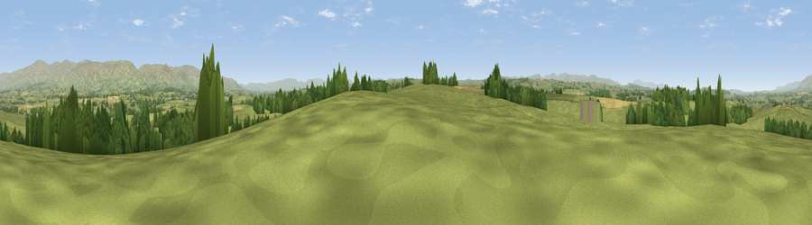

Viewpoint near Colby
#14884 in England · top 54% of its area beats it · near ColbyThe view, rendered

A 360° render of this exact spot computed from the terrain model, tree cover and land cover — summer colours, afternoon light, calibrated against photographs of famous viewpoints. Real trees, hedges and buildings will differ in detail.
The panorama
Grey silhouette: terrain skyline in each direction (720 bearings, Earth curvature and refraction included). Dashed green: skyline with trees (+15 m) and buildings (+8 m) as obstacles. Blue strip: how far the ground is visible on each bearing.
Where the view opens
Wedge length = distance to the farthest visible ground on that bearing (vegetation-aware). Rings at 10, 25 and 50 km.
What fills the view
83% grassland · 10% woodland · 5% cropland · 1% built-up
Angular shares of the visible panorama (visual magnitude), not map area. Landscape diversity 0.26 (0–1 Shannon).
Key numbers
More beautiful places nearby
The staircase of upgrades: each row has a higher view potential than everything closer. Driving times are estimates from straight-line distance, calibrated against real road routing — check an actual route before setting out.
| Place | Direction | Drive | Score |
|---|---|---|---|
| Threat Rigg | NNW · 1 km | ~3 min | 58.5 |
| Viewpoint near Hoff | SSE · 3 km | ~7 min | 59.4 |
| Viewpoint near Maulds Meaburn | SSW · 4 km | ~9 min | 61.3 |
| Viewpoint near Maulds Meaburn | S · 5 km | ~10 min | 61.8 |
| Viewpoint near Maulds Meaburn | S · 5 km | ~12 min | 62.2 |
| Viewpoint near Crosby Ravensworth | SW · 7 km | ~15 min | 65.0 |
| Dufton Pike | NE · 8 km | ~17 min | 73.7 |
| Murton Pike | ENE · 9 km | ~18 min | 75.0 |
54.57823, -2.55110 · source: screening · position refined by local search. Computed location — check access rights before visiting.